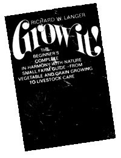
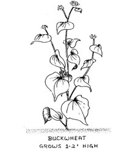
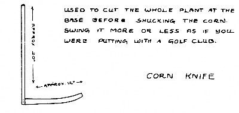
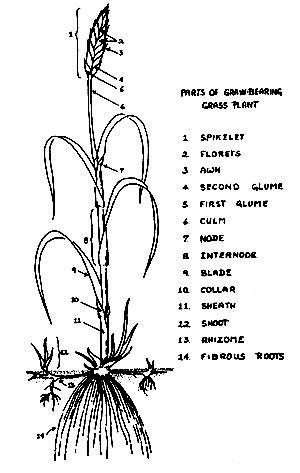
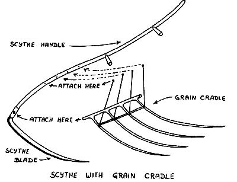
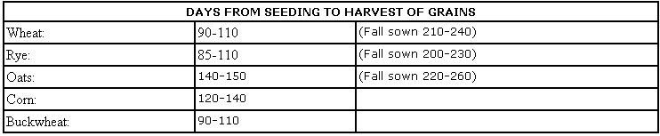
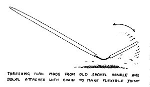

SPECIAL NOTE: GROW IT! is a big book and even if a
chunk this size were to be run in issue after issue after
issue of MOTHER, it would take over two years to put the
complete volume in your hands. If you haven't got two years
to play around with, we recommend that you truck on down to
your nearest book store and shell out $8.95 for your
very own copy of GROW IT! That way, Richard Langer will
be happy, Saturday Review Press will be happy...and we're
betting that you'll be happy too. It's a darn good book.
EXTRA SPECIAL NOTE: All material here printed from GROW IT! Copyright©1972
At last! For the first time since the HAVE-MORE Plan was published way back in the 1940's, a fellow named Richard W. Langer has come up with a 365-page book that really introduces a beginner to small-scale farming. Wanna raise your own fruit, nuts, berries, vegetables, grain, chickens, pigs, ducks, geese and honeybees? GROW IT! tells you how to get started, we like it, and here's another chapter from the book.
A police state finds it cannot command the grain to grow. - JOHN F. KENNEDY
The rolling fields of golden wheat that you think of when you hear the word "grain" are basic to any agricultural venture. But they come in small, easy-to-care-for homestead sizes as well as in the huge horizonless acreage of the plains. And you should have a few such fields if your farm is to be in any way self-sufficient. For it is these field crops, cultivated for their seeds, that supply our bread, and much of the food for our livestock. Without the cereals and related field crops, civilization - perhaps even language - might never have developed. It is the field crops that persuaded man to settle down and take up the plow.
Today's cereals are products of domestication as much as the cow or the dog. They bear little resemblance to their ancestors. Wild corn, whose seed served only the natural function of reproducing the species, may have yielded no more than a quarter of a bushel of small, hard kernels per acre. Today's cultivated corn has been known to yield over 150 bushels of large plump seeds per acre.
The beauty of it is that for the most part this domestication has been a natural process. Somewhere, sometime, someone found an ear of wild corn that was a little bigger, a little juicier or sweeter than the rest. Instead of eating it right away, he thought maybe if he planted it the new corn would be a little better too. It probably wasn't...not all of it, at least. But a few plants, maybe even a quarter or half of them, were. He saved the best of these for seed again...and so on for generations. In recent times hybridization, still a natural process of selection but guided directly by man, speeded up the results. The development of modern cereals, for all its lack of publicity, far outshadows that of the hydrogen bomb. Without these grains the world could not possibly be fed any longer, whereas it could still be destroyed quite effectively without the aid of the H-bomb. Of course, you're not going to save the world with your small field of grain. But choose your seed carefully, as the farmer with a reverence for nature has done since he first tilled the soil, sow, cultivate, harvest it
well...and your bread will be wholesome and good, the feed for your animals nutritious, your farm a small but indisputable proof of better things to come.
Fine, you say, but where do I start? Well, you'll want wheat, and maybe buckwheat and rye, for your bread, oats and corn for your animals, and no doubt a few ears of sweet corn for yourself. The amount of land needed for this is surprisingly small. Just a half-acre of wheat and one acre of corn will take care not only of your bread box, but a small, healthy flock of chickens as well. An additional three or four acres of corn, oats, and a hay mix that grows well in your region will round out your grainery enough to feed some pigs and goats. A two-acre pasture will take care of them through the summer. If you happen to be a brown-rice addict, incidentally, consider cultivating a taste for the other grains...a rice paddy in this country is not something for the apprentice farmer to tackle.
The amount of buckwheat grown in the United States is relatively minor, perhaps 1/2000th that of corn. Still, it's an of, but also because, if you keep bees, the rich dark buckwheat flour makes the kind of country-morning flapjacks you dream of, but also because if you keep bees, the rich dark buckwheat honey you'll get is great on top of those pancakes. The middlings, which is what remains after milling flour, make fine stock feed, and the whole grains are excellent for the chickens. On a commercial scale buckwheat is processed for rutin, a relatively new wonder drug that combats hemorrhage, frostbite, gangrene, high blood pressure, and even to some extent radiation damage.
Buckwheat is a fairly new crop thought to have originated under cultivation in China a thousand years ago. It is an erect herbaceous annual usually reaching a height of three feet or so. The alternate leaves are triangular, varying in length from two to four inches. The single taproot, though it has few branching roots, is nevertheless a very effective extractor of soil nutrients, and the buckwheat plant can avail itself of minerals sometimes unobtainable by wheat, oats, and other grains. It also improves soil conditions more than these. Hence the old saying of some farmers that if the land is too poor to grow anything on, it will still carry buckwheat. It's an ideal crop for a field in need of revitalization.
Buckwheat is best grown in the northeastern part of the United States, although its range could probably be extended considerably. If it's not grown in your region, experiment with a small lot, as long as the physical conditions seem appropriate. It does well on most well-drained soil, better in a cool, moist climate, but is susceptible to cold. Since high temperatures and dryness cause the plant to set seeds very poorly, it is usually sown as a fall crop. Liming is not necessary, the plant preferring slightly acid soils.
The two main varieties of buckwheat grown for flour are the Japanese and the silverhull, which are often sown mixed. A third variety called common gray is also used with some frequency. Other varieties you may run across are Tartary and Tetraploid; these, however, are grown mostly for rutin production and not for their edible end products.
Drilling is preferred. Use three to four pecks of seed per acre in seven-inch rows, planting twelve weeks before the first expected killing fall frost. This assures that the seeds will set in cool weather. Broadcasting the seed at four to five pecks per acre will probably give you a good enough crop if you don't have a grain drill. You can expect to harvest between twenty and thirty bushels an acre.
Harvest in late fall just after the first-formed seeds mature. One of the problems with buckwheat is that the seeds on the plant mature at different times; therefore, harvesting is timed to maximize the number of mature seeds. The plants are cut, shocked, and field-dried. Field drying takes about ten days. Then the buckwheat tops are ready to be stored whole for winter fodder - chickens will pick out the seed as you feed it to them - or threshed like wheat if you're planning to mill your own flour.
It's corn that is as American as apple pie, not apple pie. Apples are a European crop. Corn not only originated in the Americas, but most early American civilizations were based on it. The Aztec, the Inca, and the Mayan were all corn cultures in the same way that the Khmer is a rice culture and the European a wheat culture. Even today it is a keystone crop of Western hemisphere agriculture. But it's not the same sweet corn you grow in the vegetable garden. Field corn is grown for its storage quality; if you try to boil it up for dinner, you'll be very disappointed. Still, if its woody flavor doesn't appeal to you, the livestock love it.
Corn is a highly developed annual grass. It has been so domesticated into a superproducer, in fact, that it can no longer survive in the wild state. Wild corn is extinct.
The corn plant is composed of a tall tapering stem as thick as one and a half inches at the base and as tall as eighteen feet in the case of some hybrids grown under ideal conditions. Rooting is strong, particularly the development of brace roots when the plant reaches its maximum growth. However, corn roots do not improve the soil. The crop is very hard on soil in general. Never plant a field to corn unless it has had two years of another crop in rotation.
Although corn is of tropical origin, it does well in subtropical and temperate climates. It's the summer temperatures that count. Since it is an annual, even subzero winters will have no effect simply because the plants aren't around during that time of year. They're seeds in your grain bin.
Enough moisture is the big problem with corn. Almost any soil will do, but if the rainfall is insufficient, the plant will not thrive. This is particularly important during flower fertilization. Your corn crop will do best if there is a fair amount of rain the four weeks before silking...the stage of development where pollen appears on the tassels topping the stalks and the silks appear on the incipient ears of corn. Rain a few weeks later will give it an extra boost.
Corn comes in two basic colors: white and yellow. Since yellow corn contains much more vitamin A, it's preferred. Multicolored corn, known as "Indian corn," is usually grown only for decoration, although you will sometimes find freckled ears in other varieties. Corn is usually classified by its type of kernel and starch.
Dent Corn. The most widely cultivated. Each kernel is composed of both hard and soft starches. The soft is in the center and toward the top. It shrinks upon drying and the distinctive dent forms at the top of the kernel. For a change, try dent corn instead of popcorn some winter evening. It won't explode, but will rupture more gently, the kernel about doubling in size. Heated up in oil like popcorn, it's known as "parched corn", and tastes like those delicious, crunchy, half-popped pieces you used to get toward the bottom of the popcorn bag at old grade-B movies.
Flint Corn ("Indian Corn"). Grown in cooler climates and high altitudes because of its early-maturing quality. Kernels contain soft starch in the center with a coating of flint-hard starch all around. Variegated kernel coloration. Flour Corn ("Squaw Corn"). The all-soft starch of the kernels lends itself to flour milling, just like wheat, although it will be a rougher flour. It is also known appropriately enough as "soft corn". White and/or blue kernels.
Pod Corn. A primitive corn in which each individual kernel is enclosed in a pod, or husk. A very leafy plant often used as forage corn.
Popcorn. What makes this corn the stormy evening fireside companion it's famous as is its hard endosperm, or outer covering. When the corn, with a moisture content of roughly 12 percent, is heated, the endosperm prevents the water vapor from escaping. As pressure builds up, this outer cover ruptures with a pop.
Sweet Corn. What you raise in your vegetable garden, not for the animals...unless you feel extravagant. Kernels are translucent and smooth, and contain sugar as well as starch. Much of the sugar is broken down within a few hours of picking, which is why from-the-stalk-to-the-boiling-pot sweet corn makes the supermarket variety taste like rejects from a birdfood manufacturer.
Waxy Corn. The endosperm is composed of a starch with a waxy appearance, particularly when cut. It is an industrial corn in the sense that the cornstarch derived from it is used primarily for making adhesives and sizing for textiles and papers.
Hybridization has expanded the choice even further, and is the main thrust behind the phenomenal corn yield increases in the last decades. However, if you're thinking of growing a hybrid corn, note that you cannot save the seeds from a double hybrid, that is, one produced by crossing four corns instead of the two used in common hybridization, for future planting. The seeds from double hybrids will not grow true. There's something about double-crossing that makes them revert to type. Most of the corn planted today is hybrid, and even single-crossed varieties grow best from primary seed stock, or that produced by the actual hybridization. So if you want to plant your next year's corn from this year's seed, you'll have to do some shopping around for nonhybrid seed.
Corn is usually planted one or two weeks after the average date of the last killing frost of spring. In southern Texas this means as early as the end of January. The Corn Belt usually plants sometime in May, depending on the area. Location of your farm and its land contours will be the deciding factors for planting time. Some farmers will plant sweet corn ten days earlier than everybody else in the vicinity because they have a southern hill much less exposed to frost than the surrounding area. For each two days of earlier planting they get one-day earlier mature corn. This means they can take their sweet corn to market as much as a week before the rest of the farmers. The price they get for it is much higher. So, of course, is the risk they take. One late frost could wipe out the crop. Still, there's more than just the grocery money to "first cornitis"...there's that certain irresistible pride in having the earliest sweet corn of the season.
Germination of corn seed is best at a soil temperature of 60° F. At 55° F. it is retarded, at 50°F. or below it is minimal. The more clayey the soil, the more important the temperature. If your soil is loamy or sandy, germination will be good at temperatures as low as 55°F. Soil temperatures can be measured directly with a thermometer. But unless you're experimentally inclined, just plant when your neighbors do; they know the timing instinctively.
Planting corn about an inch or two deep ensures it enough moisture. Planting it deeper has not shown any increase in yield. Generally, the heavier the soil, the closer to the top it should be seeded. Open soils need planting at the full two inches, since they give up moisture more readily. Plenty of organic matter in the soil is, of course, a plus.
Corn can be drilled, check-rowed, or hill-dropped. Drilled corn usually outyields the others and is the easiest, so stick with this method. Seeding varies from seven thousand to twenty-four thousand plants per acre. In most cases there is little yield increase with over sixteen thousand. Another big variable is the width between rows...usually forty, thirty, or twenty inches. Rows thirty to thirty-six inches apart give the best results, provided your soil is in good condition. If it's not, switch to wider rows.
Chances are you'll have someone else come by with a corn planter till you can get your own. In that case, don't be too insistent on having your own way. If he spaces his rows at forty inches, don't demand twenty inches or you might not get your corn planted. There will be a difference in yield, but only of 5 percent or so, a major factor on the large-scale farm but not on the small one. To boot, in some areas there are positive benefits to be derived from spacing as wide as sixty inches, so listen to the old-timer's advice.
Seven to ten days after planting, the seedlings will break ground. While you might not hear the corn grow-then again you might - its progress is very rapid. Mark the top of one plant's growth on a stick early some day after a night of rain. Come back after supper for a surprise.
You'll probably find the smallest farms in your area utilizing a corn picker, even if it means renting one or bringing in a custom man. It is a significant time-saver. Picking an acre's worth of corn takes an experienced man about eight hours. A two-row picker will harvest and husk it in under two.
With only an acre or two of corn, you'll have little difficulty hand-harvesting, even with the seventy-five to one hundred bushels of corn on the cob you can expect to pick per acre. But remember, when you get to the husking stage, your hands are going to feel it unless they've built up some good hard calluses from other farm work.
As opposed to your small plot of sweet corn, which is harvested by the ear the very day it ripens sweet and milky, feed corn is harvested when the upper leaves have lost half their color and the lower ones all of it. The husks should be dry, and in the case of dent corn, the dent, appropriately enough, should be well dented. Harvesting is usually best after a frost.
If you intend to use the cornstalks as bedding for your livestock, cut individual stalks with a corn knife. Bind ten to fifteen stalks into a bundle and shock ten to fifteen bundles together. Let the shocks field-dry for a couple of weeks. The precise drying time will depend on the weather. Ears will break off crisply from their stalks when ready. Haul the shocks of corn to the barn and stack them. Pick the ears off when you have time.
If you plan on plowing under the following spring (remember to go over the stalks with a disc harrow before plowing) drive a wagon into the field when the ears are ready to be picked and do just that. Haul the dry ears back to the barn.
Husk the corn for animal feed the way you would sweet corn for the pot. It will be easier, because it's dry, but count on getting those calluses all the same. In the old traditional husking bees whoever drew a red ear of corn got to kiss the partner of his choice. So the clever farmer slipped some
Indian corn into his planting to assure eager workers. Ten percent red ears is about maximum, however, if you intend to get any work out of your crew, and, as one farmer put it, it takes a lot of advance planning to make sure the right people show up.
Pigs will eat whole corn on the cob happily. For your chickens, however, it must be shelled. This is done by running the cob through a sheller...by hand it would take forever. A hand-crank model suffices for the small farmer. For goats and other ruminating livestock, the best use is made of corn when it is ground whole, cobs and all. Take it to your local mill for grinding.
TThe world's most important crops are wheat, rice, corn, and, coming in fourth, oats. As animal feed, oats were once primarily the domain of horses. However, with the decline in the equestrian population, they have been used more and more as a general livestock feed, for dairy cattle, young sheep, hogs, and other animals. Oat hulls, the by-product, are used commercially to make furfural, a solvent and chemical intermediate widely utilized in oil refining, pharmaceuticals, and the production of nylon. For the small farm, if growing conditions permit, oats are highly recommended, not only for their food value, but also because the straw makes the best bedding of all grasses. And they are a good nurse crop for a forage field of alfalfa.
A nurse crop is one that grows quite quickly and is sown together with a much slower-growing one to provide shade and minimize weeds. When oats are sown as a nurse crop with alfalfa, the oat crop is harvested as it matures in summer. Then in fall the first alfalfa crop can usually be harvested from the same field. The alfalfa is harvested again the next year, maybe three or four times in a season...just like mowing a king-sized lawn.
Oats are a moisture-demanding cereal. They are particularly prone to poor yield if hot, dry weather predominates during the latter part of their growth and kernel development. Oats do poorly in high altitudes (over two thousand feet) and best in cool, moist climates. About soil they're a lot less fussy, however. Almost any well-drained soil will do.
The five general types of oats, classified by the color of their hulls, are black, gray, red, white, and yellow. The most common in the North is the white; that preferred in the South is the gray or the red. You'll want to start with a regionally tested variety.
The more your oat seeds weigh, the better their quality. A heavy bag of oats means light, poor-yielding seeds have been culled out.
The amount of seed per acre you can sow will depend on the rainfall figures for your area. With a lot of rain, there will be less moisture competition among the plants, so you can have more of them to a field. In drier areas of the country, such as the Great Plains, four to eight pecks per acre is common. Land in the eastern states can usually carry a seeding of six to ten pecks. In the rain-laden Pacific Northwest the amount can be raised to ten to fifteen pecks. The heavier end of the seeding scale is used in fall planting to insure that a good crop is sustained through the winter for spring harvesting.
Oats may be fall- or spring-sown. Spring sowing predominates except in the more southern areas, where winter oats, along with all their other attributes, make an excellent cover crop. Fall seeding should be done early, usually thirty days before the first expected killing frost; spring seeding one week before the average last killing frost.
As is true of most grain crops, drilling will give bigger yields with less seed than broadcasting. Plant your oats in drills four inches apart and cover with two inches of soil. Broadcasting might yield only twenty-five to thirty bushels of oats an acre as opposed to the forty or fifty obtainable from the same field drilled. Then again, you're not really out to set world records, If you can't get someone to give you a hand with his grain drill in exchange for part of your crop, just increase the size of your planting a little.
A crop of oats is harvested when the kernels are in the dough stage...not soft enough to squash between your fingers like a bug, yet soft enough to be dented by your thumbnail. The heads will be yellow, about half the leaves still green. If a combine-thresher is used, harvesting is done
about a week later, when the oats are fully ripe. But with hand-harvested oats, it's better to harvest a little early than a little late. Cut with a scythe and grain cradle. Windrow it, that is, rake it into long, narrow rows, up and down the field, with about eight to ten feet between the rows so the wind can dry it out. Let the windrows lie for a day, then bind into bundles eight to twelve inches in diameter. Lean several bundles together so they stand upright. The oats should field-cure for about two weeks, then be threshed like wheat. Feed the whole oats to the livestock, or grind for oatmeal.
Being a rye bread nut myself, I can't recommend too highly growing this one. Besides, rye is easier to grow than wheat, if not as high-yielding, and makes excellent green manure. Rye is one of the more recent cereals to come under cultivation. It is hypothesized that it grew only in the wild state as late as twenty-two hundred years ago. Even so, its new-found popularity is already declining. Today it is grown more for green manure than for flour; barely a fourth of it is harvested for grain. People seem to prefer the white chemical cotton that passes for bread these days to a solid, dark, peasant loaf that is naturally wholesome. Another possible reason for the decline of rye as anything but a green manure crop may be that the main use for rye straw used to be in making horse collars.
To give you an idea of what you can expect if you decide to grow rye for flour, rye weighs fifty to sixty pounds a bushel and you can expect to harvest twelve to eighteen bushels an acre.
Rye will grow in almost any soil, including sandy, acid stuff that will not carry most other grain plants. It is this ability to thrive on relatively infertile soils that makes it such a valuable green manure crop. It requires less moisture than wheat and much less than oats, but will also grow well with more. Rye can be planted in any state in the United States. Over 50 percent of the commercial rye crop in the United States comes from the northern Great Plains states, where the limited rainfall makes it an ideal crop.
Dakold. For the coldest regions, such as Montana and the Dakotas. Rosen. Middle-temperature regions. Abruzzi. For the southern parts of the country.
Pick a variety suitable to your region. Growing Abruzzi up north, for instance, can lead to almost total crop failure...except, of course, rye is never a total flop, since there will always be something there to plow under as green manure.
Rye, like wheat, is sown about the time of the average first and last killing frosts of fall and spring, respectively. The exception to this is winter rye sown for pasture or for green manure, in which cases it should be planted a month earlier. Planting for green manure requires more seed than planting for grain, since you're after the succulent matter rather than the flour. For manure, use up to two bushels per acre; for grain, three to six pecks, depending on the moisture in your region. The wetter the weather is apt to be, the more seed you can plant on a field. In the same vein, the moister the ground, the shallower the seeding, the usual range being half an inch to two inches. Seeding deeper than you need to reduces the yield.
Rye, like oats and wheat, is also harvested when the seed is in the dough stage. Treat the same as you do wheat, including milling. But remember, if you have a field of wheat and one of rye, the rye will ripen up to a week earlier.
One doesn't hear much about sorghums in the city, probably because you can't serve sorghum on the cob. Essentially, this crop is the more arid farm's corn. It's not that sorghums need any less water than corn...it's just that they can extract it from the soil more efficiently and are more drought-resistant. If you live in a dry part of the country, many around you will no doubt be growing sorghums. But avoid the crop if you can. Sorghums contain prussic acid, and while careful preparation will make good silage of it, pasturing on it, unless you're absolutely certain no young plants are present, will often kill the livestock. Poorly prepared silage will do the same. Sorghum hay causes no problems, since the prussic acid is removed in curing. But along with their other drawbacks, sorghums are hard on the land, so why get involved?
Usually considered a forage crop, the sunflower is not a grain, and is included here because I happen to like eating sunflower seeds almost as much as corn on the cob. So do chickens, and it makes as good a poultry feed as any of the grains. In some parts of the country sunflowers are used for silage. However, they give it a resinous taste not favored by livestock. For this reason it is disguised for them as molasses silage. Grow some sunflowers for yourself and the chickens. A field of eight-foot-high sunflowers, with the flowers themselves up to a foot in diameter, is a fabulous sight.
Sunflowers grow almost anywhere in the United States. They are particularly useful for "grain" production in high-altitude regions where low growing-season temperatures tend to give poor corn or sorghum yields. Sunflowers are also more resistant to frost, making them useful in areas of short growing seasons. They thrive on good soil, but can also be grown on poorer ones. Highly variable in yield, with a range of anywhere from ten to eighty bushels per acre.
Almost all sunflowers grown in the United States are of the Mammoth Russian variety.
Plant sunflowers one week before the average last frost. Use rows thirty-six inches apart if you're drilling, with six to seven pounds per acre at a depth of one to two inches. A corn planter or a grain drill with the holes blocked to give enough spacing between the rows can be used. For small lots, broadcasting will suffice, if you can get an even spread. Don't try to increase the seed quantity much above eight pounds per acre. Give them room, lots of room. Sunflowers are particularly sensitive plants when it comes to crowding and competition. Cultivation is important for the same reason; weeds will do your "turn-to-the-suns" no good.
Sunflowers are harvested rather like corn. Wait till the yellow rays have about half fallen off the flower head. Lob off the tops with about a foot of stem and haul them in from the field in your wagon. Hang them by their stems, tied in bundles. When the flower heads are dry, rub them back and forth over some one-inch mesh screening fastened atop a barrel to collect the seeds.
The cultivation of wheat is older than history. Even in the Stone Age it was being grown by the lake dwellers of Switzerland. Nothing about its origin is certain except that it was not indigenous to the Western hemisphere.
For the bread-maker, a bushel of good wheat weighs a minimum of sixty pounds. You should get at least fifteen to twenty bushels per acre...that's a lot of bread. But you don't have to eat it all; the grain is excellent for livestock and the straw makes good bedding as well.
Wheat grows in the wide band from sixty degrees north latitude to forty degrees south latitude, doing best with a cool, moist growing season followed by a warm, dry period for ripening. There are two groups: winter and spring. Spring wheat is grown in the more northern regions of the United States, winter wheat, sown in fall, not winter, in the South.
Hard Red Winter. A hard, high-protein wheat grown in the Great Plains area. Good for making bread flour.
Soft Red Winter. Grown in areas of higher rainfall, milder winters. Produces a soft, lower-protein flour usually reserved for sweet pastries, cookies, cakes, etc. Predominantly grown in the Midwest...Ohio, Illinois, and Indiana.
Hard Red Spring. The highest-protein wheat for bread flour. Grown mostly in the north-central states where the cold winters preclude the growing of winter wheat. Can do with less rainfall than the winter wheats. White. Another pastry-flour wheat, this is grown in the far western states...California, Idaho, and Oregon.
Durum. The wheat with the hardest kernels. As such, its primary use is for pastas, such as macaroni and spaghetti. A spring wheat grown chiefly in the north-central area.
The growing areas and uses of a particular wheat are not rigidly fixed. But if you can grow, say, durum and hard red spring in your region, you'd be better off with hard red spring for your bread flour. Within the main classifications of wheat, just given, there are almost 250 varieties presently being grown. Local availability and planting conditions should guide you in your choice.
With all seeds, quality pays. Wheat is self-fertilizing, and once you raise a crop, you'll have your own seeds for the next year's planting. You'll have to cull the batch you plan to sow, picking out any weed seeds and trash that might have been collated in with it during harvesting, but the wheat seeds themselves will be of the quality of their parents.
Your first year, start with a variety of wheat that has already shown its adaptability to your region. Seed at the rate of four to six pecks an acre. If you sow late, add an extra peck or so. Drilling makes for better germination than broadcasting and is used almost exclusively on large farms. However, until you get a grain drill, broadcasting will probably give you fine results. Seed the deepest on sandy and other loose soils, the shallowest on clay soil. The range of soil cover is one to three inches, the average two.
Winter wheat should be sown about the time of the average first frost. Seeding too early increases the likelihood of lodging and of destruction of the crop by Hessian fly. But the wheat should be given enough of a chance to get started before winter sets in…underground, that is, you don't want it to start sending up surface shoots, or it will be winter-killed.
Whereas winter wheat is generally seeded on the late side, spring wheat should be sown as early as possible. Again, the date is gauged by frost time; plant at the time of the average last killing frost. Late planting by only two weeks can cut the yield of a wheat crop by a fourth.
WWheat, like oats and rye, is harvested when it's in the dough stage. This doesn't mean instant bread. You still have to cut, bind, shock, thresh, winnow, and grind it. Harvest when the straw is just beginning to turn yellow and a kernel is soft enough to dent with your thumbnail, not soft enough to squash like a bug.
First the wheat is cut. You can do a passable job with a sickle on a small field an acre or less in size. A scythe with a grain cradle saves a lot of work and will handle up to ten acres of any small grain such as rye, oats, or wheat, if you're in shape. Anything over ten and you'd better look around for a custom man with a combine.
After cutting, the wheat is bound in bundles about eight to ten inches in diameter, and the bundles clustered in shocks to cure. Fieldcuring wheat takes about ten days.
There's a lot to be said for the old hand-harvesting and threshing tradition in terms of really feeling like you're living with the land, but if what looked at first like a manageable crop to harvest by yourself seems to be taking you forever, remember it takes time to learn new skills. Remember that too when you first size up the field. A combine run by a neighbor or custom man, cutting and threshing the wheat in a once-over operation, reduces harvesting time to a tenth of what it would be otherwise. And that saved time may be more needed elsewhere on your farm. Balance things out before you tackle the big jobs singlehanded.
When your wheat is cured, haul it in off the fields for threshing. Spread out a layer of it six to eight inches deep on a clean, dry, hard surface, preferably concrete. Now take out all your frustrations on the wheat by beating it with a flail, a long pole jointed to a shorter pole which hits the grain to be threshed.
Threshing is going to be a bit of work. You're done when the grain heads are empty. Remove the straw by lifting it off with a pitchfork, using a sifting motion to let the grain drop through. Shovel up the grain and chaff and winnow it by pouring from one basket to another...try to arrange to have a cooperative wind blowing. Let the grain fall from at least four feet to permit the chaff to be blown clear. A more efficient means is a fanning mill. However, in most cases, it will be too expensive for the amount you'll be harvesting. Give the chaff to your chickens as bedding, and they will pick out any grain you missed. The wheat is now ready to mill.
For whole-wheat flour in small ready-for-the-oven-bread batches, you can use a manually operated grist mill and grind your own just before baking. For larger quantities, ferret out the nearest miller from his floury bin and strike a bargain with him. There'll be a lot of other equipment your farm will need more urgently than a full-sized flour mill capable of grinding hundreds of pounds of flour at a time. Some sunny day, for a touch of real country life as the early farmer knew it, you might want to go hunting for a nice flat, smooth rock from the bottom of the creek and try stone-grinding your flour on it. But don't plan on making a general practice of bagging your own, or you'll never get the goats milked and the eggs gathered and the honey into jars.
|
 |
 |
 |
|
 |
 |
 |
|
 |
|
|